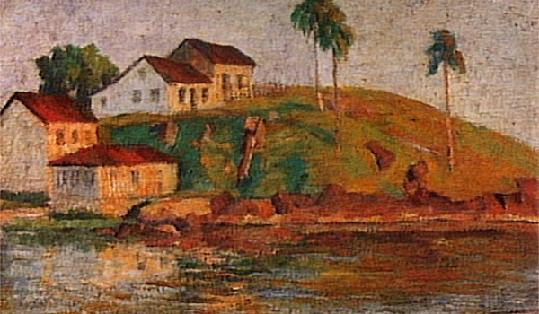
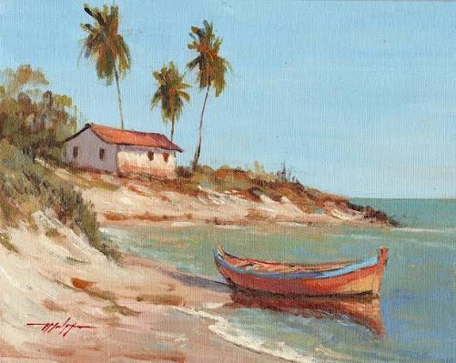
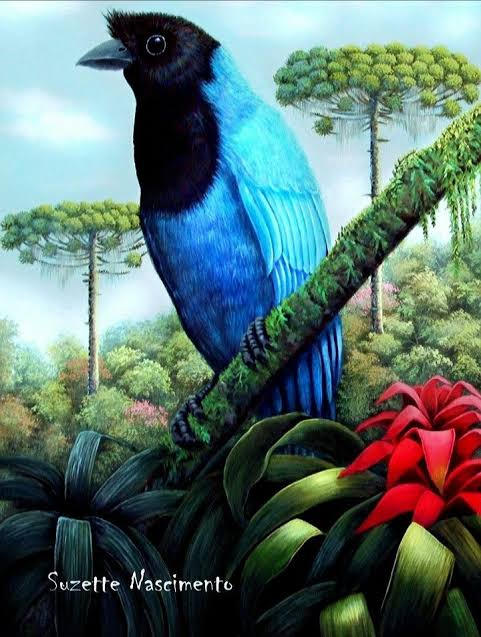

Sobre o tema
Arte do Paraná A arte paranaense faz parte da rica cultura do estado do Paraná e apresenta diversas formas de expressão, como pintura, música, literatura, dança, teatro e artesanato. Influenciada pelos povos indígenas, pelos imigrantes e pelas diferentes culturas presentes no estado, ela representa a história, os costumes e a identidade do povo paranaense. Conhecer a arte do Paraná é também conhecer um pouco mais sobre a diversidade e a riqueza cultural de sua população..

Contexto histórico
A arte paranaense começou a se desenvolver a partir da mistura de diferentes culturas presentes no estado. Os povos indígenas foram os primeiros a produzir manifestações artísticas no território, deixando importantes tradições, desenhos, objetos e conhecimentos. Com a chegada dos imigrantes europeus, principalmente italianos, alemães, poloneses e ucranianos, novas influências foram incorporadas à cultura paranaense. Durante os séculos XIX e XX, o crescimento das cidades e o desenvolvimento econômico do Paraná contribuíram para o surgimento de novos artistas e movimentos culturais. Curitiba tornou-se um importante centro artístico, com a criação de espaços culturais, museus, teatros e escolas de arte. Dessa forma, a arte paranaense foi construída ao longo do tempo pela união de diferentes povos, tradições e formas de expressão, formando uma identidade cultural marcada pela diversidade e pela valorização da história do estado.

Importância cultural
A arte paranaense é marcada pela diversidade cultural e pela riqueza das paisagens do estado do Paraná. Suas manifestações artísticas refletem a influência dos povos indígenas, dos imigrantes europeus e de diferentes grupos que contribuíram para a formação da identidade paranaense. Nas artes visuais, destacam-se artistas que retratam a natureza, as cidades, os costumes e o cotidiano do Paraná. A arquitetura, a pintura, a escultura e o artesanato também ajudam a preservar e representar a cultura regional. Além disso, a literatura, a música, o teatro e a dança possuem grande importância na valorização das tradições do estado. A natureza paranaense, com suas florestas, rios, cachoeiras e paisagens, também serve como inspiração para muitos artistas. Elementos como o pinheiro-do-paraná, as araucárias e a cultura dos povos que vivem no estado aparecem frequentemente nas obras. Assim, a arte paranaense representa a história, a cultura e a diversidade do Paraná. Ela contribui para preservar as tradições e, ao mesmo tempo, permite que novos artistas expressem diferentes formas de enxergar e transformar a realidade. .

curiosidades
curiosidade 1
Uma das manifestações mais marcantes e originais da arte paranaense é o Movimento Paranista, que surgiu na década de 1920. Em vez de apenas copiar as tendências europeias da época, artistas como João Turin, Lange de Morretes e Zaco Paraná decidiram criar uma identidade visual única para o estado. Para isso, eles transformaram símbolos locais — principalmente o pinhão, a roseta de pinhão e a árvore do araucária — em elementos gráficos do estilo Art Nouveau. Esses motivos estilizados foram parar em esculturas, pinturas, arquitetura e até no design das calçadas de petit-pavé de Curitiba, criando uma arte verdadeiramente nativa e fácil de reconhecer.
curiosidade 2
Você sabia que o Paraná tem o único museu do Brasil dedicado exclusivamente à gravura? É o Museu da Gravura Cidade de Curitiba, que fica no Solar do Barão. O Paraná virou uma referência gigante nessa técnica (a arte de entalhar e imprimir desenhos, como xilogravura) por causa do artista Guido Viaro. O museu tem um acervo com milhares de obras, incluindo trabalhos originais de artistas lendários como Pablo Picasso e Andy Warhol.